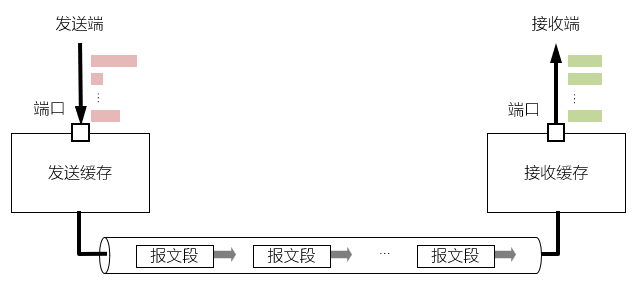
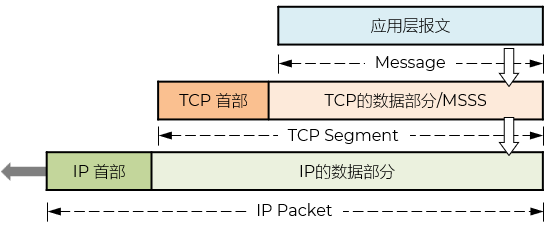
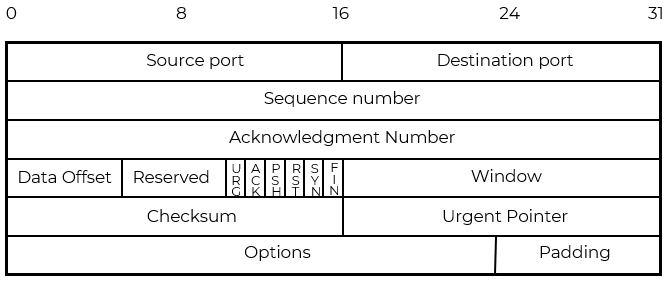
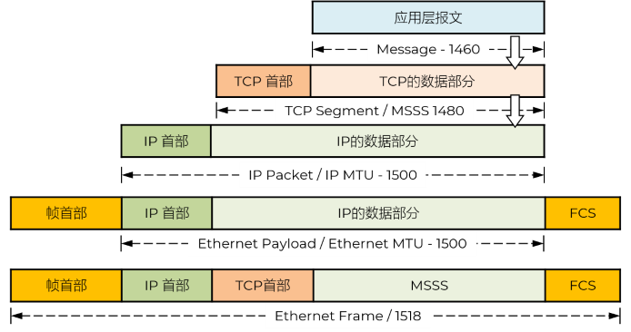

- Joke Time
概述 Overview
- TCP - Transmission Control Protocol
- 基于连接（点对点）
- 面向字节流（序号）
- 可靠交付
- 全双工通信

应用 Application
- Web Browsing
- 文件传输 File Transfers
- 邮件交互 Email Exchange
- VPN 网络 VPN Connections
- 云服务 Cloud Services
报文 Packet
- 一个 TCP 报文段分为 首部 和 数据 两部分，而 TCP 的全部功能都体现在它首部中各字段的作用
- TCP 报文段首部的前 20 Bytes是固定的，后面有 4n Bytes是根据需要而增加的选项 (n 是整数)
TCP 首部的最小长度是 20 Bytes
- 2 Bytes
- 2 Bytes
- TCP MSS 通常设为 1460 = 1500 - 20 IP首部 - 20 TCP首部
- 实际大小由三次握手时由双方协商确定的
- 标准中规定536未默认值，是后向兼容 - 通信的最低需求；实际中很少使用
- 客户端在端口 49155 向目标主机 80 端口的应用[WEB]发起HTTP请求
- 服务端在 80 端口处理请求后，回发一个响应经过 49155 端口给客户端
- 4 Bytes；32 bits
- 通常记为 seq
- 当前报文段中 第一个数据字节 的序列号
- TCP 是面向字节流的协议，每一个字节 都有一个序号
包括链路建立成功的报文和后续0窗口的探测报文都会消耗序号
- 增加到最大值后，重新回到 0 - 模加
- 第1个序号随机产生
- TCP 报文长度 MSS 为1000 Bytes；现有5000 Bytes数据；加上初始序号为1001
- 则：
第一个 TCP 报文：1001 - 2000
第二个 TCP 报文：2001 - 3000
第三个 TCP 报文：3001 - 4000
第四个 TCP 报文：4001 - 5000
第五个 TCP 报文：5001 - 6000
- 发送方要发送一个 1000 Bytes的数据流，初始序号为 100：
第一个 TCP 段携带 500 Bytes，则其序号为 100（100+0，100+499）
第二个 TCP 段携带剩下的 500 Bytes，则其序号为 100 + 500 = 600
- 4 Bytes；32 bits
- 通常记为 ack；部分资料记为 Ack
- Ack = n，表示序号 n-1 之前的数据已经收到，现在希望接收序号为 n 的数据，即 下一个字节 的序号
- 控制字段 ACK 为1时才有效
- 增加到最大值后，重新回到0
- 数据偏移 Data Offset
- 4 bits，以4 Bytes为单位
- TCP 报文 首部 的长度，从而确定数据部分从哪里开
- 接收方知道从第几个字节开始是应用层数据，前面都是 TCP 头部
- 如果采用固定长度，不使用选项和填充，则为 (0101)2 = 5；5*4 Bytes = 20 Bytes
- 紧急位 URG
- 1 bit 标志位 Control Bits
- 表示本报文段中包含紧急 Urgent 数据，接收方应优先处理这部分数据，而不是按正常队列顺序等待
- 配合紧急指针字段使用
- 较少使用
- 1 bit 标志位 Control Bits
- 用于确认已成功接收到对方的数据
- 只有当 ACK = 1 时，确认号字段才有效。当 ACK = 0 时，确认号无效
- 除了最初的 SYN 报文（建立连接的第一个包），所有后续 TCP 报文都必须将 ACK 置为 1
- 是实现 可靠传输 的核心机制之一
- A发送序号为201开始的报文，长度是100
- 下一次发送时，A 的序号将变为 201 + 100 = 301
- 同时对B发送的序号800之前的报文进行确认，并希望收到B序号800开始的报文
- B发送序号为800开始的报文，长度是200
- 下一次发送时，B 的序号将变为 800 + 200 = 1000
- 同时对A发送的序号300之前的报文进行确认，并希望收到A序号301开始的报文
-
这是一个典型的 全双工通信 场景：
A 向 B 发送 100 Bytes 数据（序号 201~300），同时确认 B 的数据（确认号 800）
B 向 A 发送 200 Bytes 数据（序号 800~999），同时确认 A 的数据（确认号 301）
- 如果 A 没有收到 B 的响应，启动超时重传机制，重新发送序号为 201 的报文。 直到收到对 301 的确认为止
- 立即位 PSH（Push）
- 1 bit 标志位 Control Bits
- 推送 Push 操作
- TCP 默认会缓冲数据以提高效率，但某些应用（如交互式命令行）希望数据立即被处理
- 提示接收方不要缓存，应立即将本报文段中的数据交付给上层应用程序
- 实际效果：现代操作系统通常忽略 PSH 标志，或将其视为普通数据，但发送方可设置它来建议“尽快上送”
- 重置位 RST（Reset）
- 1 bit 标志位 Control Bits
- 强制关闭连接或拒绝非法报文
- 常见错误场景：
收到不属于任何现有连接的报文（如端口未开放）
应用程序崩溃，TCP 发送 RST 终止连接
检测到严重错误（如序号严重错乱）
- RST 报文不需要确认，收到即断开
- 收到 RST 通常意味着连接异常终止（非正常四次挥手）
- 1 bit 标志位 Control Bits
- 同步序号，用于建立连接
- 在三次握手过程中，SYN 用来协商初始序号
- SYN = 1 表示这是一个连接请求或连接接受报文
- SYN = 1，ACK = 0 时，表明这是一个连接请求报文段 - 连接未建立
- SYN = 1，ACK = 1 时，表明这是一个连接接受报文段 - 连接建立；ACK 必须为1
- SYN 报文本身不携带应用数据，但占用一个序号（seq 值 +1）
- 1 bit 标志位 Control Bits
- 用来释放一个连接
- 发送方已完成数据发送，请求关闭连接
- 用于四次挥手 - 连接释放
- FIN = 1 表明此报文段的发送端的数据已发送完毕，并要求释放运输连接
表示“我不会再发数据了”，但还可以接收数据（半关闭状态）
- 对方收到 FIN 后需回复 ACK，并在自己也无数据发送时发送自己的 FIN
- 正常关闭连接必须通过 FIN，而 RST 是异常关闭
- 16 bits
- 既代表发送方当前的发送能力，也通告了接收方当前的接收能力（接收缓存剩余空间）
- 以字节为单位
- 最大窗口大小 217-1 = 65535 Bytes = 64 KB
- 通过这个值限制发送方的发送能力 - 流量控制
- 窗口值经常在动态变化
- 校验和 CheckSum
- 同UDP一样，采用伪首部来辅助校验
- 使用的 IP 协议号为 6，代表 TCP
- 紧急指针 Urgent Pointer
- 2 Bytes
- 在 URG = 1 时，指出本报文段中的紧急数据的字节数（紧急数据结束后就是普通数据），指出了紧急数据的末尾在报文段中的位置
- 选项 Options
- 长度可变，最长可达 40 Bytes
- 使用较少
- 填充 Padding
- 使整个 TCP 首部长度是 4 Bytes 的整数倍
TCP 范畴的概念
每个 TCP 报文段中的数据字段的最大长度
在 TCP 三次握手时通过选项字段协商 MSS 大小
只要缓存中存放的数据达到 MSS 字节时，就组装成一个 TCP 报文段发送出去
利用 MSS 提高传输效率



| Application Layer | 1460 |
| Transport Layer | 1480 = 1460 + 20 TCP Header |
| Network Layer | 1500 = (1460 + 20 TCP Header) + 20 IP Header |
| Data-Link Layer | 1518 = (1460 + 20 TCP Header + 20 IP Header) + 6*2 MAC + 2 Type + 4 FCS |
| Application Layer | 1472 |
| Transport Layer | 1480 = 1472 + 8 UDP Header |
| Network Layer | 1500 = (1472 + 8 UDP Header) + 20 IP Header |
| Data-Link Layer | 1518 = (1472 + 8 UDP Header + 20 IP Header) + 6*2 MAC + 2 Type + 4 FCS |
UDP 不协商 MSS
没有连接建立过程，也不会自动限制载荷大小，完全依赖应用层控制
使用 UDP 的应用必须自己确保数据 ≤ 1472 Bytes（IPv4/以太网）
初始编号 N
长度 L
编号范围：[N + 0, N + L -1]
下一个序号：N + L
| ACK | 多 |
| SYN | 多 |
| FIN | 多 |
| RST | 异常时 |
| PSH | 偶尔 |
| URG | 很少 |
小结 Summary
- TCP的特点
- TCP的报文格式
| 可靠性机制 | Sequence Number + Acknowledgment Number
Checksum |
| 流量控制 | Window |
| 连接管理 | SYN、ACK、FIN |
| 异常中断连接 | RST |
| 紧急数据处理 | URG + Urgent Pointer |
作业 Homework
(1) 第一个报文段携带了多少字节的数据？
(2) 主机 B 收到第一个报文段后发回的确认中的确认号应当是多少？
(3) 如果 B 收到第二个报文段后发回的确认中的确认号是 180，试问 A 发送的第二个报文段中的数据有多少字节？
(4) 如果 A 发送的第一个报文段丢失了，但第二个报文段到达了 B。B 在第二个报文段到达后向 A 发送确认。试问这个确认号应为多少？
30
100
80
70
序号增加到最大值后，会归零
序号最大是：28-1 = 256-1 = 255
超过256，序号就归零
同一时间，链路上的分组数量最多不超过 256个
每个分组安装最大长度128Bytes计算
总的数据量 = 256*128*8 bits
∴ 最高数据速率 = 256*128*8÷30
65535×8÷0.02 = 26.214 Mbit/s
发送时延 = 65535 Bytes ÷ 1 Gbit/s = 0.524ms
往返时间 RTT = 发送时延 + 2×端到端时延 = 0.524ms + 20ms = 20.524ms
65535×8÷0.020524 = 25.5 Mbit/s
利用率 = 25.5 Mbit/s ÷ 1 Gbit/s = 2.55%